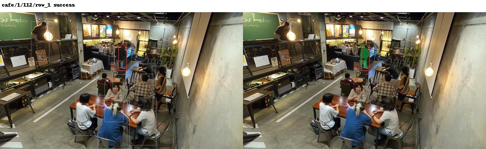

Assistant visual triage; no independent pixel GT. Illustrative cases, not an accuracy denominator.
cafe/1/112/row_1: suspected neighbor/near-duplicate silhouette under heavy overlap

cafe/4/416/row_0: partial-body selection and unrelated foreground fragments

cafe/4/416/row_2: ambiguous overlapped seated actors; suspected neighbor selection

cafe/23/273/row_7: suspected front-neighbor selection instead of rear actor

cafe/13/82/row_6: severe partial/body miss with chair/background fragments

cafe/16/259/row_3: neighbor leakage or merged person silhouette despite predicted quality .956